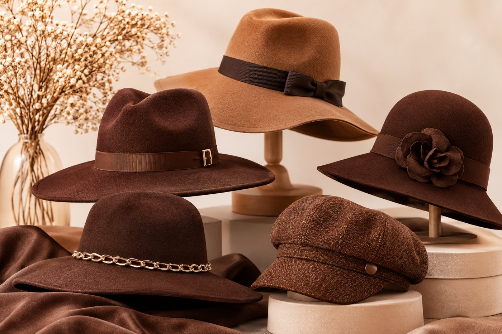

Elegant hats for fall and winter

A good hat is the fastest way to make a simple coat look styled. Choose a warm neutral like camel, chocolate or cream, keep the shape clean, and it will go with almost everything in your closet.
Disclosure: this page contains affiliate links (Amazon and AliExpress). As an Amazon Associate I earn from qualifying purchases, at no extra cost to you.
Shop the look
1. The wool fedora
A wide-brim wool fedora in camel or brown looks polished with a long coat, jeans and boots. Look for a firm brim that holds its shape and a simple band.
2. The French beret
Soft, light and easy to pack. Wear it slightly to one side with small gold earrings for a classic Parisian look.
3. The cloche or bucket hat
A rounded wool cloche or a soft felt bucket hat feels relaxed but still elegant. Both are easy to wear on cold, windy days.
Shop wool bucket hats on Amazon
4. The cable-knit beanie
For everyday warmth, a thick cable knit in cream or oatmeal looks softer and richer than a thin plain beanie. A faux-fur pom adds a cozy touch.
Shop cable-knit beanies on Amazon
Budget picks from AliExpress
Elegant hats that look far more expensive than they are:
 Wool fedora with leather band
Wool fedora with leather band Wool cloche with flower
Wool cloche with flower Wool newsboy cap
Wool newsboy capPick the right shape
- Round face: a fedora or a hat with some height on top adds length.
- Long face: a beret or a cloche worn low balances the proportions.
- Petite frame: keep the brim moderate so the hat doesn't overwhelm you.
Check before you buy
- Size: measure around your head just above the ears and compare it with the size chart.
- Material: wool or a wool blend keeps its shape and warmth better than thin polyester felt.
- Adjustable band: an inner drawstring or band helps a fedora fit securely.
- Buyer photos: they show the real color better than studio shots.

Shop by style
More ideas to compare on Amazon:
- Chocolate brown wide-brim hats
- Cream wool berets
- Camel hat and scarf sets
- Faux-fur pom beanies
- Camel wool fedoras
- Cable-knit headbands
- Slouchy cashmere-blend beanies